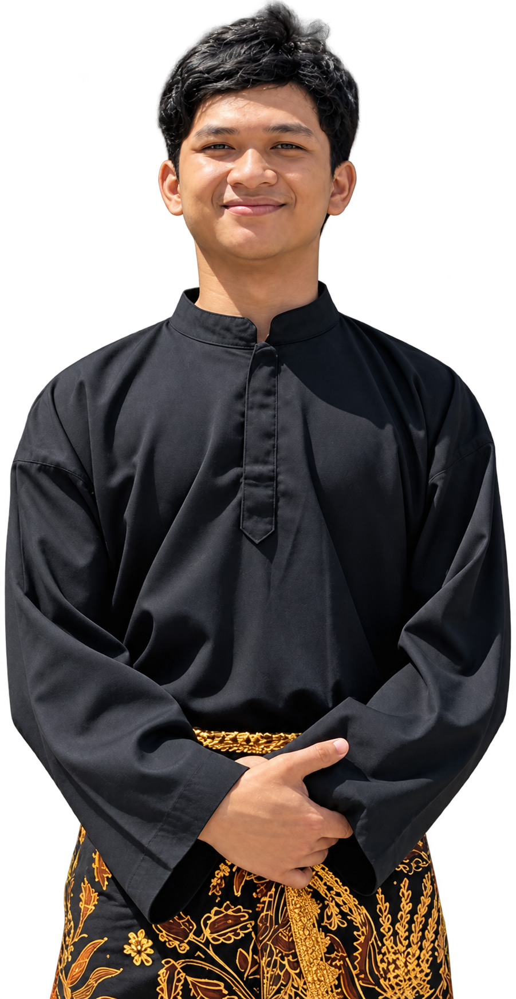

Halo, nama saya Novgeny R. Ermiawan dan saya adalah seorang

Saya adalah seorang Programmer & Video Editor dengan pengalaman lebih dari 3 tahun dalam membangun aplikasi web modern, modifikasi dan implementasi SIMRS (Sistem Informasi Manajemen Rumah Sakit), serta produksi konten visual digital.
Pendekatan kerja saya lugas dan berorientasi hasil: menghadirkan sistem yang stabil, mudah dioperasikan, dan tepat guna untuk kebutuhan harian, dipadukan dengan editing video yang komunikatif, rapi, dan menarik bagi audiens.
Membangun website responsif, aplikasi sistem terstruktur, antarmuka fungsional, dan integrasi database yang andal.
Kustomisasi alur data rekam medis, modul operasional fasilitas kesehatan, dan penyesuaian sistem dengan kebutuhan alur kerja faskes.
Penyuntingan video media sosial, promosi, profil instansi/bisnis, dan konten afiliasi.
Fokus pada Rekayasa Perangkat Lunak, Basis Data & Multimedia. Riset Akhir berupa Museum budaya Suku Marind menggunakan teknologi Virtual Reality.
MySQL, PostgreSQL, REST API, Git & GitHub
Kustomisasi modul medis, alur registrasi, kasir & farmasi
Graphic Design, Video Editing, & Content Creation
Perjalanan profesional selama lebih dari 3 tahun dalam pengembangan perangkat lunak, modifikasi sistem informasi (SIMRS), serta produksi konten visual dan video editing.
Bertanggung jawab dalam implementasi dan modifikasi sistem informasi manajemen rumah sakit (SIMRS), penyesuaian alur data rekam medis, dan dukungan sistem operasional faskes.
Mengerjakan pembuatan website, aplikasi antarmuka, serta produksi dan penyuntingan konten video untuk kebutuhan promosi, institusi, dan media sosial.
Testimoni langsung dari para pemimpin teknologi, direktur rumah sakit, dan pimpinan produk yang pernah berkolaborasi bersama saya.
Novgeny memiliki pemahaman arsitektur perangkat lunak yang langka. Dia tidak hanya membangun antarmuka yang sangat indah dan cepat, tetapi juga merancang struktur kode yang mudah dipelihara oleh tim kami. Kinerja modul SIMRS kami meningkat drastis di bawah arahannya.
Dalam dunia perbankan digital di mana stabilitas dan ketepatan data adalah taruhannya, kemampuan Novgeny mengeksekusi visualisasi finansial tanpa framework bloated adalah sebuah mahakarya teknis. Sangat profesional dan tepat janji.
Novgeny memahami bahwa desain bukan sekadar hiasan kosmetik. Filosofi tipografinya yang ketat dan efisiensi baris kodenya membawa situs editorial kami memenangkan penghargaan internasional dan mencetak rekor skor Core Web Vitals 100/100.
Apakah Anda membutuhkan arsitektur sistem enterprise baru, perancangan antarmuka berkecepatan tinggi, atau konsultasi rekayasa perangkat lunak? Kirimkan pesan sekarang.
Isi formulir di bawah ini dan saya akan merespon dalam waktu maksimal 24 jam kerja.